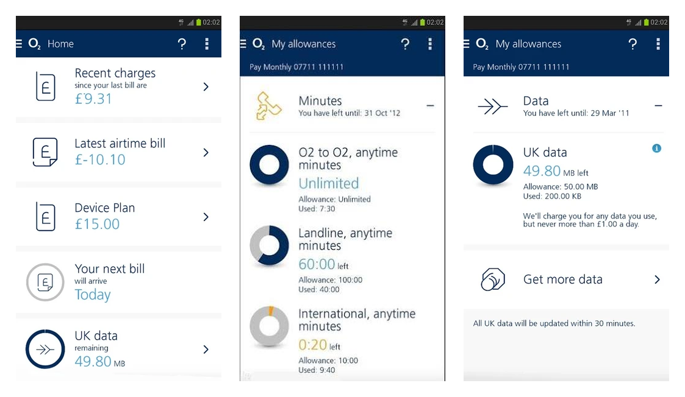
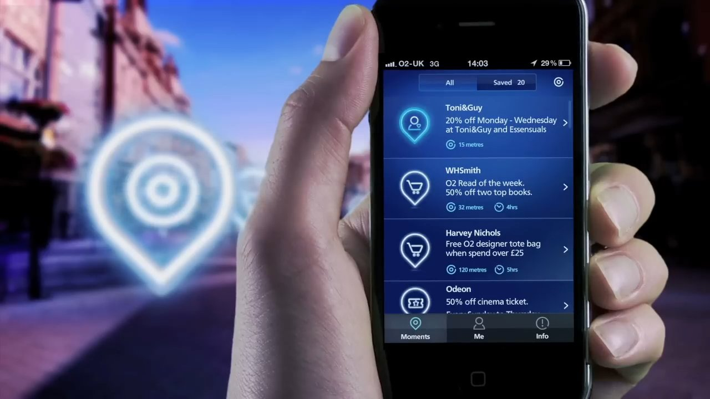
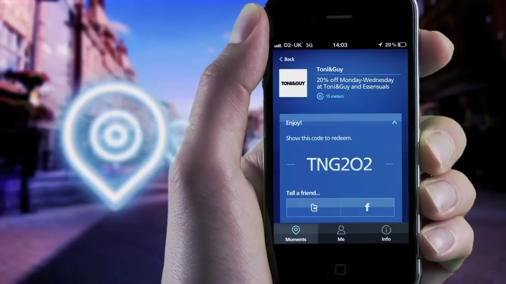

The trust isn’t in the logic underneath. It’s in whether the surface gives someone a reason to act.
This case is the screens — and the front-end I wrote for every one of them. So read it the way it was built: as decisions made on the actual interface.
Designer and front-end · delivered through Equal Experts
The stakes: two screens carried O2’s whole retention story.
MyO2 (2014) is O2 UK’s self-service app — a customer runs the entire account from it, data and usage, the bill, a tariff change, an upgrade, without dialing anyone. The math underneath it is blunt: every self-service task that lands is a contact-centre call that never happens.
The MyO2 work was a replatforming, not a fresh start: we took a legacy system and made it responsive — one build serving iOS, Android, Windows Phone, and the desktop web. And because Telefónica had millions of active subscribers living on that legacy system, the transition was deliberately cautious; you don’t switch a population’s billing screen overnight. The work also ran inside Telefónica’s own machine — close collaboration with their branding, marketing, and copywriting teams, so every screen shipped speaking O2’s voice, not a contractor’s.
Priority Moments is the other side of the same wallet — O2’s loyalty programme, launched in July 2011 behind a £6m national campaign. Offers from Odeon, M&S and Caffè Nero, matched to a customer by interest, behaviour and location; 2.6 million registrations, a 5-star App Store rating, the UK’s largest loyalty programme of its kind. I joined in 2013, through Equal Experts, and designed and built the reward and offer screens carrying that scale.
Why it mattered to O2: in a market where customers switch carriers over price, these two screens carried the retention story. MyO2 took cost out — every account task a customer self-serves is a contact-centre call O2 never pays for. Priority Moments put a reason to stay in — a weekly reward that makes the brand feel like it gives back, not just bills. One product lowered the cost of keeping a customer; the other raised the cost of leaving.
The test: same designer, same stack, two opposite jobs — only the surface differs.
The hard part wasn’t drawing pretty screens. It was that the two products demanded opposite behaviour from the same person on the same stack. MyO2 is a utility — get in, do the task, get out; trust comes from a billing figure being exact and a tariff change actually sticking. Priority Moments is a habit — the screen has to make a coffee or a cinema ticket land as a small, earned win at the right moment, without drowning it in fine print, or people stop opening it.
A correct system still goes unused if the screen doesn’t earn the tap. On a utility, get the trust wrong and the customer phones the contact centre anyway — the cost you were trying to remove walks straight back in. On a loyalty surface, get the moment wrong and the reward sits unredeemed — the reason-to-stay you built never fires. So the real work lived on the screens: making the right thing feel obvious enough to act on, on the device people actually carry.
The mechanism: the task is the screen — one number to check, one offer to use.
Here are the two surfaces, era-honest, rebuilt so you can touch the decisions instead of reading about them. The MyO2 screen leads with the one number a customer opens the app to check — data left, days to renewal — then the bill, with paying it one tap away. No dashboard, no menu maze: the task is the screen.
The Priority card starts with where you’re standing. The app read your location and ranked offers by nearness — never a catalogue to dig through, but the high street you were already walking down. One offer, one reason it’s relevant, one action. Tap Use offer and the screen flips in place to the code you show at the till — no coupon wallet, no navigation. Location, to an offer worth crossing the street for, to the code at the counter: that loop turned browsing into redeeming, and redeeming is retention — every offer used is another reason not to leave the network.
Try both — switch the MyO2 tabs, then use the offer:
2.1 GB
data left · renews in 9 days
£21.50
due 28 March
Paid · receipt sent — no call to the contact centre
MyO2 · the account, self-served
This week · near you
2-for-1 cinema tickets — Sky Screen
Tonight · 0.4 mi away
Show this code at the till
PRI-4F7K
Priority · a reason to open it
I worked both sides of every one of these surfaces — the drawing and the DOM. Nothing was lost between a design file and an engineer who never saw the intent behind it; the screen a customer tapped ran in the code I wrote.
What it cost: I can’t hand you the original screens.
So the claim is narrow on purpose: the launch-era figures are O2’s; what’s mine is exact. Every screen on both products designed with one co-designer — and every line of the front-end that shipped them written by me.
The artifact: every self-service task that lands here is a call that never happens.
MyO2 — the self-service app four million people used to run their account without dialing anyone: recent charges, the bill, allowances, data left. Every self-service task that lands here is a contact-centre call that never happens.

And Priority Moments, exactly as it shipped — these are frames from O2’s own launch film. The left frame is the geolocated list the narration above describes: Toni&Guy at 15 metres, WHSmith at 32, Harvey Nichols at 120. The right frame is the tap that follows — the offer flipped to the code you show at the till.


Falsifiable evidence — four million people, publicly reported.
Public outcomes — O2 / Equal Experts
Where this wouldn’t transfer
The launch figures are O2’s public numbers, not my attribution — I joined the programme in 2013. What’s mine is exact: every screen on both products co-designed, and every one hand-coded by me. Consumer scale from 2013 doesn’t transfer to enterprise AI on its own; the two-opposite-jobs-one-stack lesson does.
Where the principle breaks.
Earning the tap matters where the user chooses whether to engage — a bill they could ignore, an offer they could skip. In tools of obligation (a compliance form, an internal admin panel) the tap is captive, and polishing the reason-to-act buys less than fixing the workflow underneath. And surface persuasion divorced from correct logic is dark-pattern territory: this case worked because the numbers under the screens were already true. Charm without correctness isn’t design, it’s marketing with a UI.
This is the kind of problem I solve full-time.
If your product has a gap between a right answer and an acted-on one, let’s talk — 30 minutes, no pitch.
Book 30 minutes (opens in a new tab)I write about this in my newsletter ↗ (opens in a new tab)
No model in the loop, just design and code shipped at consumer scale. Next: the moment a model entered the picture — traders who out-guessed a scoreboard that was already right, and the rule that came out of watching them lose to it.